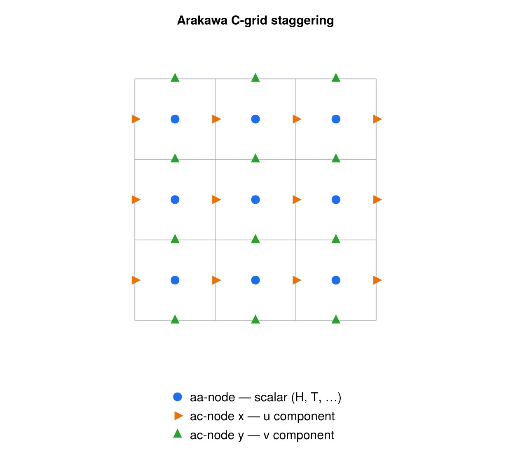

grid operations
Staggering, derivatives, distances, and subgrid interpolation
The grid-operations utilities collect the low-level array kernels used to work with fields defined on a regular 2D (and, for derivatives, 1D) grid: moving quantities between the nodes of an Arakawa staggered grid, taking spatial derivatives, measuring distances to a masked feature, and refining a coarse cell onto a finer subgrid. All routines operate on plain Fortran arrays and take the working precision wp from the precision module (except subgrid, which computes internally in double precision — see below).
staggering
staggering is a stub and is not used by any other unit. The module declares private and has no public :: list, so none of the routines below are exported; additionally calc_magnitude_from_staggered calls get_neighbor_indices, which is neither defined in the module nor imported via use.
What follows documents the intended API. Before the module can be wired in it needs a public :: list and a boundaries-aware neighbour-index routine.
The staggering module moves fields between the nodes of an Arakawa C-grid. Scalar (cell-centred) quantities live on the aa-nodes; the two components of a vector live on the staggered ac-nodes at the cell edges (acx on the x-edge, acy on the y-edge); corner values live on the ab-nodes. Each procedure is a function of one or more real(wp) arrays that returns a new real(wp) array of the same shape. Averaging kernels apply periodic boundary conditions at the domain edges. Two *_ice variants restrict the averaging to neighbours that satisfy an ice mask (f_ice, H_ice), falling back to the plain four-point average when no masked neighbour is available.

Procedures (all real(wp)):
! Centred magnitude of a vector from its staggered (ac-node) components,
! restricted to fully ice-covered cells (f_ice == 1); `boundaries` selects the
! neighbour-indexing scheme.
function calc_magnitude_from_staggered(u, v, f_ice, boundaries) result(umag)
real(wp), intent(IN) :: u(:,:), v(:,:) ! acx-, acy-node components
real(wp), intent(IN) :: f_ice(:,:) ! ice-fraction mask
character(len=*), intent(IN) :: boundaries
real(wp) :: umag(:,:) ! aa-nodes
! Centred (aa-node) average of the staggered ac-node components.
function stagger_ac_aa(u, v) result(umag) ! u: acx, v: acy -> aa
! Corner/centre four-point averages between aa- and ab-nodes.
function stagger_aa_ab(u) result(ustag) ! aa -> ab
function stagger_ab_aa(u) result(ustag) ! ab -> aa
function stagger_aa_ab_ice(u, H_ice, f_ice) result(ustag) ! aa -> ab, masked
function stagger_ab_aa_ice(u, H_ice, f_ice) result(ustag) ! ab -> aa, masked
! Edge averages between aa/ab and the staggered ac-nodes.
function stagger_aa_acx(u) result(ustag) ! aa -> acx
function stagger_aa_acy(u) result(ustag) ! aa -> acy
function stagger_acx_aa(u) result(ustag) ! acx -> aa
function stagger_acy_aa(u) result(ustag) ! acy -> aa
function stagger_ab_acx(u) result(ustag) ! ab -> acx
function stagger_ab_acy(u) result(ustag) ! ab -> acyOnce the routines are exported, typical usage would be to interpolate cell-centred data onto the x- and y-edges, or recover a centred vector magnitude from staggered velocity components. (This does not compile against the module as it currently stands — see the note above.)
use precision, only: wp
use staggering, only: stagger_aa_acx, stagger_aa_acy, stagger_ac_aa
real(wp) :: H(nx,ny) ! aa-node scalar (e.g. ice thickness)
real(wp) :: ux(nx,ny), uy(nx,ny) ! ac-node velocity components
real(wp) :: H_acx(nx,ny), H_acy(nx,ny)
real(wp) :: umag(nx,ny)
! Move the scalar field onto the staggered edges
H_acx = stagger_aa_acx(H)
H_acy = stagger_aa_acy(H)
! Recover the centred speed from the staggered velocity components
umag = stagger_ac_aa(ux, uy)derivatives
The derivatives module computes first spatial derivatives of a gridded field using three-point finite-difference stencils. Interior points use a centred stencil; boundary points use a one-sided (upstream/downstream) stencil unless bc == "periodic", in which case the centred stencil wraps around. Derivatives are evaluated only where the logical mask is .true.; an optional lim argument clamps the result to [-lim, lim]. Stencil weights are accumulated in double precision internally.
Public procedures:
public :: calc_dvdx_2D
public :: calc_dvdy_2D
public :: calc_dvdx_1D
public :: calc_dvdy_1D
! 2D field: x- and y-derivatives
subroutine calc_dvdx_2D(dvdx, v, dx, mask, bc, lim)
real(wp), intent(OUT) :: dvdx(:,:)
real(wp), intent(IN) :: v(:,:)
real(wp), intent(IN) :: dx
logical, intent(IN) :: mask(:,:)
character(len=*), intent(IN) :: bc ! "periodic" or otherwise
real(wp), intent(IN), optional :: lim ! clamp |dvdx| <= lim
subroutine calc_dvdy_2D(dvdy, v, dy, mask, bc, lim) ! same shape, y-direction
! 1D field
subroutine calc_dvdx_1D(dvdx, v, dx, mask, bc, lim)
real(wp), intent(OUT) :: dvdx(:)
real(wp), intent(IN) :: v(:)
real(wp), intent(IN) :: dx
logical, intent(IN) :: mask(:)
character(len=*), intent(IN) :: bc
real(wp), intent(IN), optional :: lim
subroutine calc_dvdy_1D(dvdy, v, dy, mask, bc) ! delegates to calc_dvdx_1DNote that calc_dvdy_1D has no lim argument: in 1D it simply forwards to calc_dvdx_1D (there dvdy == dvdx).
Example — gradient of a 2D field over its whole domain with a periodic x-boundary and a slope limit:
use precision, only: wp
use derivatives, only: calc_dvdx_2D, calc_dvdy_2D
real(wp) :: z(nx,ny) ! field to differentiate
real(wp) :: dzdx(nx,ny), dzdy(nx,ny)
logical :: mask(nx,ny)
mask = .true. ! evaluate everywhere
call calc_dvdx_2D(dzdx, z, dx, mask, bc="periodic", lim=0.5_wp)
call calc_dvdy_2D(dzdy, z, dy, mask, bc="infinite")distances
The distances module measures, for every grid cell, the distance to the nearest cell of a reference feature marked in an integer mask. It uses a chamfer (weighted grid-propagation) distance transform with horizontal/vertical weight 1, diagonal weight √2, and a knight-move term √5 for accuracy. The mask convention is -1 inside the feature, 0 on the feature (distance zero), and 1 outside; the returned distance is signed accordingly (negative inside). Distances are propagated in double precision.
Public procedure:
public :: compute_distance_to_mask
subroutine compute_distance_to_mask(dist, mask, periodic_x, periodic_y)
real(wp), intent(OUT) :: dist(:,:)
integer, intent(IN) :: mask(:,:) ! -1 inside, 0 at feature, 1 outside
logical, intent(IN), optional :: periodic_x ! wrap i-neighbours
logical, intent(IN), optional :: periodic_y ! wrap j-neighboursWhen neither axis is periodic (the default), a single forward+backward chamfer sweep is used. If either periodic_x or periodic_y is set, the forward and backward sweeps are iterated (with wrapped neighbour indices) until the distance field stops changing, so information can cross the periodic seam.
Example — signed distance to a coastline, wrapping in x:
use precision, only: wp
use distances, only: compute_distance_to_mask
integer :: mask(nx,ny) ! -1 land interior, 0 coast, 1 ocean
real(wp) :: dist(nx,ny)
call compute_distance_to_mask(dist, mask, periodic_x=.true.)
! dist < 0 inland, 0 on the coast, > 0 offshore (in grid-cell units)subgrid
The subgrid module refines a single coarse cell of a 2D field onto an nxi × nxi subgrid by bilinear interpolation. It first reconstructs the four cell corners (ab-nodes) from the surrounding aa-node values, then fills the subgrid array with bilinearly interpolated values between those corners. When nxi == 1 the routine returns the cell-centre value unchanged.
As described in the source header, the interpolation is always performed in double precision: the *_dp procedures do the real work, and the single-precision path consists of thin wrappers that promote their real(sp) arguments, call the *_dp worker, and demote the result back to real(sp). Each operation is exposed through a generic interface so a caller built with wp = sp or wp = dp can use the generic name and have it resolve to the matching specific by argument kind.
Public procedures:
public :: calc_subgrid_array ! generic (sp/dp)
public :: calc_subgrid_array_mask ! generic (sp/dp), with mask
public :: calc_subgrid_array_cell ! generic (sp/dp)
public :: calc_subgrid_array_dp ! double-precision worker
public :: calc_subgrid_array_mask_dp ! double-precision worker (mask)
public :: calc_subgrid_array_cell_dp ! double-precision worker
! Generic name calc_subgrid_array resolves to calc_subgrid_array_{sp,dp}:
subroutine calc_subgrid_array_dp(vint, v, nxi, i, j, im1, ip1, jm1, jp1)
real(dp), intent(INOUT) :: vint(:,:) ! nxi x nxi output
real(dp), intent(IN) :: v(:,:) ! full aa-node field
integer, intent(IN) :: nxi ! subgrid points per side
integer, intent(IN) :: i, j ! current cell indices
integer, intent(IN) :: im1, ip1, jm1, jp1 ! neighbour indices
! Masked variant: corner averages only include neighbours where mask is true.
subroutine calc_subgrid_array_mask_dp(vint, v, mask, nxi, i, j, im1, ip1, jm1, jp1)
real(dp), intent(INOUT) :: vint(:,:)
real(dp), intent(IN) :: v(:,:)
logical, intent(IN) :: mask(:,:)
integer, intent(IN) :: nxi
integer, intent(IN) :: i, j, im1, ip1, jm1, jp1
! Interpolate a cell directly from its four corner values (quadrants 1..4).
subroutine calc_subgrid_array_cell_dp(vint, v1, v2, v3, v4, nxi)
real(dp), intent(INOUT) :: vint(:,:)
real(dp), intent(IN) :: v1, v2, v3, v4 ! v2--v1 / v3--v4
integer, intent(IN) :: nxiThe *_sp specifics (calc_subgrid_array_sp, calc_subgrid_array_mask_sp, calc_subgrid_array_cell_sp) have identical argument lists with real(sp) array/scalar arguments and are reached through the generic names rather than being called directly.
Example — refine each cell of a field onto a 5×5 subgrid using the generic interface (resolves by the kind of vint/v):
use precision, only: wp
use subgrid, only: calc_subgrid_array
real(wp) :: v(nx,ny) ! coarse aa-node field
real(wp) :: vint(nxi,nxi) ! subgrid for one cell
integer, parameter :: nxi = 5
do j = 1, ny
do i = 1, nx
! (im1,ip1,jm1,jp1) computed with the caller's boundary convention
call calc_subgrid_array(vint, v, nxi, i, j, im1, ip1, jm1, jp1)
! ... use vint (e.g. fractional area above a threshold) ...
end do
end do